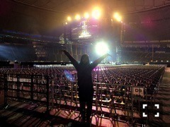
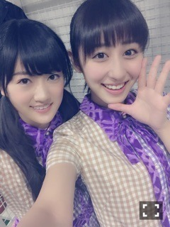

| 2015/02 26 Thu | 斎藤ちはる たくさんのありがと う(´>∀<｀)ゝ |
ちはるーむへようこそ(﹡ˆ ˆ﹡)
2.22 3rd BIRTHDAY LIVE
来てくださった皆さん、スカパーを見てくださった皆さん、
本当にありがとうございましたヽ(；；)丿
真冬の西武ドーム、そして7時間半という長時間のライブという悪条件の中、
こうしてメンバー全員で最後まで完走できたのは
皆さんの温かさや応援があってこそだと思っています。
本当に感謝ですヽ(；；)丿
1stの左胸の勇気に始まり、
2ndの狼に口笛を、
3rdの涙がまだ悲しみだった頃、
4thの春のメロディー、
5thの13日の金曜日、
6thの扇風機、
7thの初恋の人を今でも、
8thの生まれたままで、
9thのここにいる理由。
たくさんのアンダー曲。
たくさんの思い出。
全てがいい思い出とはいえないけれど
それがあったから成長出来たのかなって思います。
そして最後、
10thの何度目の青空か？
イントロから青いサイリウム。
とても綺麗でした。
ファンの方々の愛を感じました。
そして大サビの時に、ファンの方が青い風船をサプライズで飛ばしてくださいました。
また、ファンの方々の愛をたくさん感じました。
知らないうちに、
物凄く涙が溢れてきました。
本当に、すごく嬉しかったです。
10thにしてやっと巡ってきた選抜というポジション。
3年間の気持ちが
わたしの心から溢れてきたのだと思います。
今でもあの光景を思い出すと
涙が今にも溢れ出てきそうです。
本当に、一生忘れません。
むしろ、忘れられないです。
あの時の気持ちを、大切にしよう。
もっともっと頑張ろう。

西武ドームと、私。
何回か野球を観に行っていた西武ドームで、
まさかライブをする日がくるなんて。
西武ドームという素晴らしいステージで
3歳のお誕生日をお祝いできて、嬉しかったです。すごく。
そして、"元"斎藤ちはるのみんな、
琴子、蘭世、純奈、みり愛、絢音、れなち(﹡ˆ ˆ﹡)
昇格おめでとうヽ(；；)丿
よかったね。長かったね。
私も似たような気持ちたくさん経験してたから
その悔しさや不安な気持ち、わかります。
泣いて喜んだよ。
おめでとう(﹡ˆ ˆ﹡)
これからも頑張ろうね！

素敵な1日でした(﹡ˆ ˆ﹡)
ありがとう(﹡ˆ ˆ﹡)
誕生日のお祝いのコメント、
去年よりたくさんの方にお祝いしてもらえて
本当に嬉しかったです。ヽ(；；)丿
ひとつひとつが力になりますヽ(；；)丿
コメント毎回読んでるからね！
チェックしてるからね！
素敵な18歳だった！といえる年にします。
これからもよろしくね\( ˆ ˆ )/♡
ジャケ写のときのわたし。
ばいるんっ
るんるんっ
ちはるんっ
(´>∀<｀)ゝ